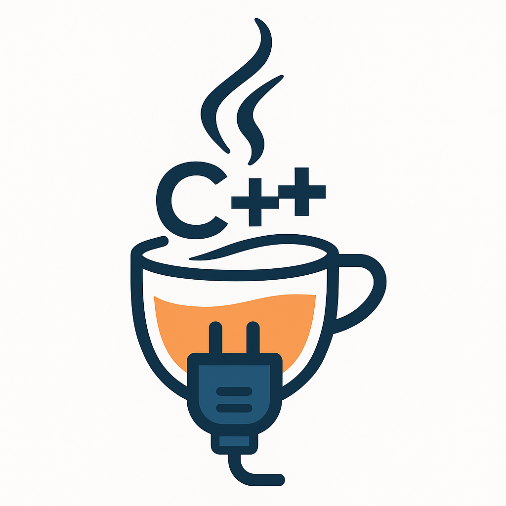

A modern, cross-platform socket library for C++20 — modeled after Java's networking API, but written with clean, idiomatic, exception-safe C++.

📘 Overview
jsocketpp brings the simplicity of Java's Socket, ServerSocket, and DatagramSocket APIs to modern C++20 — with full support for TCP, UDP, multicast, and UNIX domain sockets, on both Windows and Unix-like systems.
It abstracts away:
- platform-specific quirks (Winsock vs BSD)
- low-level socket boilerplate
- select() and fcntl() logic
- raw buffer juggling
... and replaces them with a safe, portable, object-oriented API that’s easy to use and hard to misuse.
🧰 Typical Use Cases
- Minimalist web servers or microservices (HTTP/TCP)
- CLI tools for socket testing or diagnostics
- Inter-process communication (IPC) with UNIX domain sockets
- UDP-based discovery and messaging protocols
- Multicast streaming or group communication
- Socket wrappers for game servers or simulation engines
💡 Why jsocketpp?
C++ networking is traditionally low-level and error-prone. jsocketpp is designed to:
- Save you from boilerplate (socket, bind, listen, accept, recv...)
- Eliminate raw pointer management and platform-specific checks
- Encourage RAII, strong exception safety, and readable code
- Support modern build tools (CMake, Conan, vcpkg)
- Let you write servers and clients in under 10 lines
✨ Features at a Glance
- 📦 TCP, UDP, Multicast, and UNIX socket support
- 📶 IPv4, IPv6, and dual-stack support (automatic when possible)
- 🔠Blocking, non-blocking, and timeout-enabled I/O
- 📬 Buffered and typed read<T>() methods
- 🔄 acceptAsync() and tryAccept() for non-blocking server loops
- ✅ Socket::isConnected() to check peer connection state
- 🯠Java-inspired classes:
- Socket, ServerSocket, DatagramSocket, MulticastSocket, UnixSocket
- 🔒 Exception-safe by design (no manual cleanup needed)
- 🧪 Unit tested with GoogleTest
- ⚙️ Packaged for Conan, vcpkg, and CMake consumers
- 🪟🧬 Cross-platform: Windows, Linux, macOS
🔧 Platform & Toolchain Support
| Feature | Support |
| C++ Standard | C++20 |
| OS Support | Linux, Windows (Win10+), macOS |
| Compilers | GCC ≥ 10, Clang ≥ 11, MSVC 2019+ |
| Package Managers | Conan, vcpkg |
| Build System | CMake ≥ 3.19 (presets.json) |
| Documentation | Doxygen + markdown |
🔠jsocketpp vs Boost.Asio
| Feature | jsocketpp | Boost.Asio |
| API style | Java-style OOP | Callback-driven / coroutine / reactor |
| Dependencies | None (header + source only) | Requires Boost (or standalone Asio) |
| Asynchronous I/O | Non-blocking, timeout, async accept | Full async/reactor model |
| Learning curve | Low | Moderate to steep |
| Coroutine support | Planned | ✅ Full support (C++20 coroutines) |
| Readability | ✅ Very high (simple methods) | Can be verbose |
| Performance | Near-native for blocking I/O | Optimal with async + threads |
Use jsocketpp when you want:
- Clean and portable blocking I/O
- Simple, readable code
- Great for CLI tools, daemons, test utilities, game servers, educational use
🚀 Performance & Footprint
- No runtime overhead — it's just modern C++ around system calls
- All socket I/O maps directly to recv, send, recvfrom, etc.
- Internal buffering is efficient (default: 4 KB)
- No heap allocations during read/write (unless resizing)
For high-throughput async workloads, Boost.Asio or io_uring may outperform it. For most real-world usage, jsocketpp is more than fast enough.
âš ï¸ Limitations
- Not thread-safe: Each socket instance must be used from a single thread
- No coroutine API (co_await) — async support is currently based on select() with callbacks/futures
- No SSL/TLS (consider wrapping with OpenSSL or mbedTLS externally)
- No epoll/kqueue/io_uring integration (yet)
- Does not auto-retry on EINTR or transient errors (manual retry loop if needed)
- Limited to host-native socket support (AF_UNIX on Win10+ only)
📦 Installation
jsocketpp can be installed via vcpkg, Conan, or manually as a CMake subproject.
✅ vcpkg
Then link via find_package(jsocketpp CONFIG REQUIRED) in CMake.
✅ Conan
conan install jsocketpp/[latest]@
You may also add jsocketpp to your conanfile.txt or conanfile.py.
🔧 Manual Integration
git clone https://github.com/MangaD/jsocketpp.git
cd jsocketpp
mkdir build && cd build
cmake ..
make
sudo make install
Or add the src/ folder to your CMake project:
add_subdirectory(jsocketpp)
target_link_libraries(myapp PRIVATE jsocketpp)
🚀 Quick Start Examples
🧵 TCP Echo Server
while (true) {
auto client = server.accept();
std::string msg = client.read<std::string>();
client.write("Echo: " + msg);
}
}
TCP server socket abstraction for jsocketpp.
TCP client socket abstraction for jsocketpp.
TCP server socket abstraction for cross-platform C++ networking.
Definition ServerSocket.hpp:100
int main()
Definition client.cpp:89
📡 UDP Echo Server
while (true) {
socket.read(packet);
socket.write(packet);
}
}
UDP datagram packet class for jsocketpp.
UDP datagram socket abstraction for jsocketpp.
Represents a UDP datagram packet, encapsulating both payload and addressing information.
Definition DatagramPacket.hpp:48
Cross-platform UDP socket class with Java-style interface.
Definition DatagramSocket.hpp:484
🌠Multicast Receiver
#include <iostream>
sock.joinGroup("239.255.0.1");
sock.read(pkt);
std::cout << "Got multicast: " << std::string(pkt.buffer.begin(), pkt.buffer.end()) << std::endl;
}
Multicast UDP socket abstraction for jsocketpp.
Cross-platform multicast UDP socket class (IPv4/IPv6).
Definition MulticastSocket.hpp:75
🧷 UNIX Domain Socket (IPC)
server.bind();
server.listen();
auto client = server.accept();
std::string msg = client.read<std::string>();
client.write("Echo from UNIX socket: " + msg);
}
Unix domain socket abstraction for jsocketpp.
Cross-platform abstraction for Unix domain sockets.
Definition UnixSocket.hpp:88
On Windows, AF_UNIX requires Windows 10 build 1803 or later.
🔄 Java ↔ jsocketpp Class Mapping
📚 Documentation
Full API documentation is available as Doxygen-generated HTML:
👉 📖 jsocketpp API Reference (GitHub Pages)
You can also generate it locally:
cmake -S . -B build -DBUILD_DOCS=ON
cmake --build build --target docs
The generated HTML will appear in docs/doxygen/html/index.html.
🧪 Building and Testing
The project uses CMake presets for consistent and cross-platform builds:
cmake --preset=gcc-debug-x64 # or clang-debug-x64 / msvc-x64-static
cmake --build --preset=gcc-debug-x64
ctest --preset=gcc-debug-x64
Presets are defined in CMakePresets.json and include configurations for:
- GCC, Clang, MSVC, MinGW
- x64 and ARM64
- Debug/Release/RelWithDebInfo
- Shared and static builds
- CI workflows for GitHub Actions
Tests are written with GoogleTest. To run them:
ctest --preset=gcc-debug-x64
🛠Developer Tooling
Pre-commit hooks
The repository supports pre-commit checks:
- clang-format (via .clang-format)
- cmake-format (via .cmake-format.yaml)
- Header guards, whitespace, and YAML checks
Set up with:
pip install -r requirements.txt
pre-commit install
🤠Contributing
We welcome PRs, issues, and ideas! Please read the following before contributing:
To work on the library:
git clone https://github.com/MangaD/jsocketpp.git
cd jsocketpp
cmake --preset=clang-debug-x64
cmake --build --preset=clang-debug-x64
Remember to format your code with:
cmake --build . --target clang-format
And write tests in tests/!
⚖️ License
This project is licensed under the MIT License. See LICENSE for details.
🙠Acknowledgements
- Berkeley Sockets API — used in C/C++ for network programming
- The Java Networking API — for its excellent abstractions
- GoogleTest — for testing
- CLion, VS Code, Ninja, and CMake — for development tooling
- Everyone who contributes, uses, or discusses jsocketpp ❤️
❓ FAQ
Is jsocketpp async?
Yes — jsocketpp provides non-blocking and timeout-based I/O, including:
- Socket::connect(timeout)
- ServerSocket::accept(timeout) and tryAccept(timeout)
- ServerSocket::acceptAsync() (via std::future)
- ServerSocket::acceptAsync(callback) (via background thread)
These are based on select() internally and return in bounded time.
Coroutine support is a potential future feature via co_await + platform-specific polling (e.g., epoll, kqueue, IOCP).
How does error handling work?
All functions throw either:
- SocketException — for platform-level errors (connect(), recv() failure, etc.)
- SocketTimeoutException — if an operation times out (e.g., in accept() or read() with timeout set)
All errors include the native error code and message.
Can I use jsocketpp in production?
Yes — jsocketpp is robust, portable, and suitable for production use in many real-world scenarios:
- Lightweight HTTP and WebSocket servers
- Game servers using TCP/UDP/multicast
- Local IPC using UNIX domain sockets
- Network tools, daemons, test harnesses
It supports non-blocking and timeout-driven I/O, including async accept() and connect() via select() and futures.
However, keep in mind:
- No TLS yet (use OpenSSL or mbedTLS externally)
- No coroutine (co_await) support yet
- Not thread-safe by default — use one socket per thread
- No high-performance event loop (e.g., epoll/io_uring)
Does it work on Windows?
Yes. It fully supports Winsock, and even supports AF_UNIX on Windows 10+ (1803 or later).
On Windows:
- WSAStartup is handled internally
- Platform-specific errors are translated to readable messages
What is the default buffer size?
Most read/write operations use a default internal buffer size of 4096 bytes. You can override this in constructors for Socket, DatagramSocket, etc.
🛣️ Roadmap
- UDP + Datagram abstraction
- UNIX domain sockets (Linux, macOS, Win10+)
- Timeout + non-blocking support
- Exception handling and message formatting
- CMake + Conan + vcpkg packaging
- CI with full CMake preset matrix
- Doxygen-rich documentation
- TLS/SSL (via OpenSSL wrapper or interface)
- Coroutine-based async API (co_await I/O)
- epoll/kqueue/io_uring abstraction layer
- IPv6 advanced options (flow label, hop limit)
- Proxy socket types (SOCKS5, HTTP CONNECT)
🧠See Also